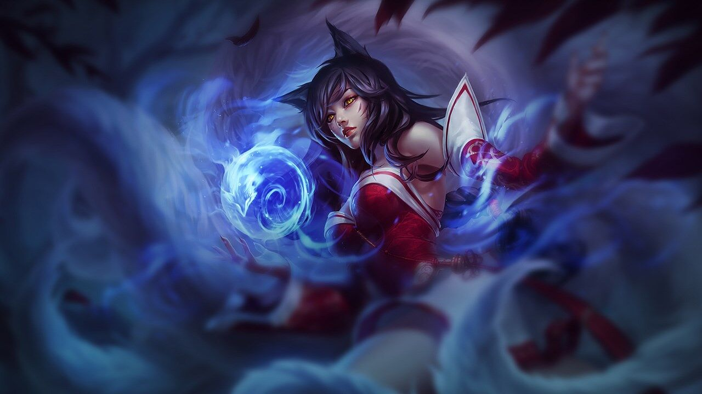

Ahri, Ionia
The Ninetailed FoxInnately connected to the latent power of Runeterra, Ahri is a vastaya who can reshape magic into orbs of raw energy. She revels in toying with her prey by manipulating their emotions before devouring their life essence. Despite her predatory nature, Ahri retains a sense of empathy as she receives flashes of memory from each soul she consumes.
Default Ahri Skin
Ahri sends out and pulls back her orb, dealing magic damage on the way out and true damage on the way back. Ahri gains a brief burst of movement speed and releases three fox-fires, that lock onto and attack nearby enemies. Ahri blows a kiss that damages and charms an enemy it encounters, instantly stopping movement abilities and causing them to walk harmlessly towards her. The target temporarily takes increased damage from Ahri. Ahri dashes forward and fires essence bolts, damaging nearby enemies. Spirit Rush can be cast up to three times before going on cooldown.